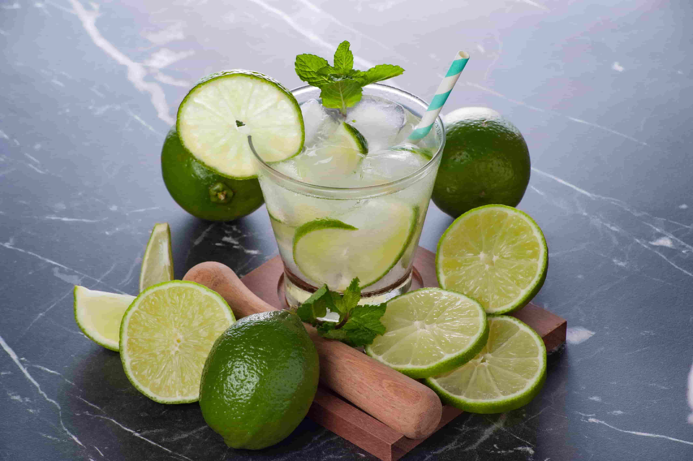

The Best Brazilian Foods You Just Got to Try

Introduction
Are you ready for a mouthwatering journey via the vibrant world of Brazilian food? From the scorching streets of Rio de Janeiro to the plush Amazon rainforest, Brazil gives a diverse and delectable array of flavors and dishes as a way to tantalize your taste buds. In this newsletter, we're going to take you on a gastronomic excursion to discover the first-rate Brazilian food, from feijoada to Brazilian cakes, with a sprinkle of Portuguese and Argentine influences alongside the manner. Get prepared to feast your eyes and your belly on a culinary experience like no different!
Table of contents
The Best of Brazilian Cuisine
Brazilian food is a beautiful tapestry woven from the threads of numerous cultures. It combines indigenous substances with impacts from Portuguese, African, and Indigenous traditions. Here's a delectable dish-via-dish manual to a number of the first-class Brazilian delicacies you should strive.
1. Feijoada: A Sizzling Brazilian Classic
Feijoada, regularly hailed because the countrywide dish of Brazil, is a hearty and soul-warming stew that mixes black beans, red meat, and sausages. It's a symphony of flavors and textures, with every chunk supplying a pleasing blend of smoky, savory, and spicy notes. Served with rice, collard greens, and orange slices, feijoada is a dinner party healthy for each a family collecting and a carnival birthday party.
2. Brazilian Desserts
Brazilian desserts are a party of sweetness and creativity. Whether you're indulging within the creamy passion fruit mousse or savoring the gooey, tacky delight of a brigadeiro, you are in for a deal with! Here are some should-try Brazilian desserts:
Brigadeiro: These chocolate muffins are a success at every Brazilian party. Made with condensed milk, cocoa, and chocolate sprinkles, brigadeiros are chunk-sized delights to be able to make your taste buds dance!
Quindim: A vivid and sunny dessert, quindim is a candy custard crafted from egg yolks, sugar, and coconut. Its vibrant yellow coloration and tropical flavor make it a fave amongst Brazilians.
Açaí Bowl: Açaí, a superfood from the Amazon, is mixed right into a clean and clean bowl, topped with granola, bananas, and honey. It's a nutritious and delicious desire for breakfast or a snack.
3. Brazilian Drinks: Sip Your Way to Paradise
Brazilians certain understand the way to quench their thirst in fashion! From unique fruit juices to the famous caipirinha, the Brazilian beverages scene is a tropical paradise. Here are some Brazilian liquids to preserve you cool and refreshed:
Caipirinha: Brazil's country wide cocktail, caipirinha, is a zesty and clean combo of cachaça (a sugarcane spirit), lime, sugar, and ice. It's a perfect manner to relax and relax within the sun.
Guarana Antartica: A Brazilian smooth drink crafted from guarana berries, this fizzy beverage has a completely unique fruity flavor that is both energizing and refreshing.
Açaí Smoothie: Cool off with a nutritious açaí smoothie, mixing the antioxidant-wealthy açaí berry with bananas, strawberries, and a drizzle of honey.
Influences of Brazilian Food From Other Countries
Brazil's culinary panorama has been shaped with the aid of a wealthy history of cultural exchanges. Let's discover the impacts which have made Brazilian cuisine a true melting pot of flavors.
1. Portuguese Influence
The Portuguese were the primary Europeans to reach in Brazil, and their affect on Brazilian meals is simple. Some Portuguese culinary contributions to Brazilian delicacies encompass:
- Rice and Beans: The foundation of many Brazilian dishes, the mixture of rice and beans, is a nod to Portuguese delicacies.
- Bacalhau: A liked Brazilian ingredient, salted codfish, is a Portuguese import. It's frequently utilized in dishes like bolinhos de bacalhau, or codfish fritters.
2. African Heritage
During the colonial length, enslaved Africans delivered their culinary traditions to Brazil, resulting in a fusion of flavors. Many Brazilian dishes have African roots, along with:
Acarajé: A famous avenue food in Bahia, acarajé is a deep-fried ball of black-eyed pea dough filled with shrimp and spices.
Moqueca: This flavorful stew, made with fish or shrimp, coconut milk, and dendê oil, has its roots in African delicacies.
3. Indigenous Ingredients
Brazil's indigenous population contributed unique elements and cooking strategies that remain relevant to Brazilian meals:
Tapioca: A starchy product derived from cassava, tapioca is used to make crispy, gluten-unfastened crepes full of numerous candy or savory fillings.
Açaí: This Amazonian superfood is a staple in Brazilian delicacies, frequently enjoyed in smoothie bowls or mixed into liquids.
A Culinary Journey Beyond Borders
Brazil's neighboring nations have also left their mark at the us of a's meals scene. Here's a glimpse of the scrumptious cross-border influences.
1. Argentine Flavors
Argentina, recognised for its succulent beef and rich wines, has prompted Brazilian delicacies in numerous ways:
Churrasco: Brazilian barbeque, or churrasco, stocks many similarities with Argentina's well-known asado. Both function expertly grilled meats pro with salt and fireplace-kissed to perfection.
Empanadas: These savory pastries packed with meat, cheese, or veggies have a sturdy presence in each Argentine and Brazilian cuisine.
2. Portuguese and Brazilian Snacks
The Portuguese have an effect on on Brazil's meals scene is not restrained to food. The Portuguese love for snacks has additionally located a domestic in Brazilian way of life:
Pastéis: These savory deep-fried pastries, frequently full of cheese, meat, or shrimp, are a famous snack in Brazil, thanks to Portuguese impact.
Coxinha: A Brazilian favourite, coxinha is a teardrop-shaped pastry filled with shredded fowl and catupiry, a creamy cheese.

FAQs: Uncovering the Flavorful World of Brazilian Food
Q1: What are the first-class Brazilian dishes to attempt?
A1: Some of the have to-try Brazilian dishes encompass feijoada, brigadeiro, acarajé, and açaí bowls. Don't neglect to sip on a caipirinha or try guarana Antartica for a flavor of Brazil's well-known beverages!
Q2: What are the main influences on Brazilian delicacies?
A2: Brazilian delicacies is prompted by means of a rich mixture of Portuguese, African, and indigenous traditions. Additionally, neighboring international locations like Argentina have contributed to Brazil's numerous food tradition.
Q3: Where can I discover Brazilian meals out of doors of Brazil?
A3: Brazilian eating places may be observed in many worldwide cities. Look for churrascarias, which serve Brazilian barbeque, or are trying to find out a Brazilian cafe for a taste of the country's diverse pastries and drinks.
Conclusion
Brazilian food is a journey of flavors, a culinary carnival that reflects the country's vibrant culture and rich history. From the soul-warming feijoada to the sweet embrace of brigadeiros, every dish tells a story. Whether you're exploring the Amazon rainforest or strolling the streets of Rio de Janeiro, Brazilian cuisine will captivate your senses and leave you craving more. The influences of Portuguese, African, and indigenous cultures have molded Brazilian food into a truly unique and diverse culinary experience. As you explore Brazilian dishes, you'll also encounter the savory touch of neighboring countries like Argentina.
Conclusion
Brazilian food is a journey of flavors, a culinary carnival that reflects the country's vibrant culture and rich history. From the soul-warming feijoada to the sweet embrace of brigadeiros, every dish tells a story. Whether you're exploring the Amazon rainforest or strolling the streets of Rio de Janeiro, Brazilian cuisine will captivate your senses and leave you craving more. The influences of Portuguese, African, and indigenous cultures have molded Brazilian food into a truly unique and diverse culinary experience. As you explore Brazilian dishes, you'll also encounter the savory touch of neighboring countries like Argentina.